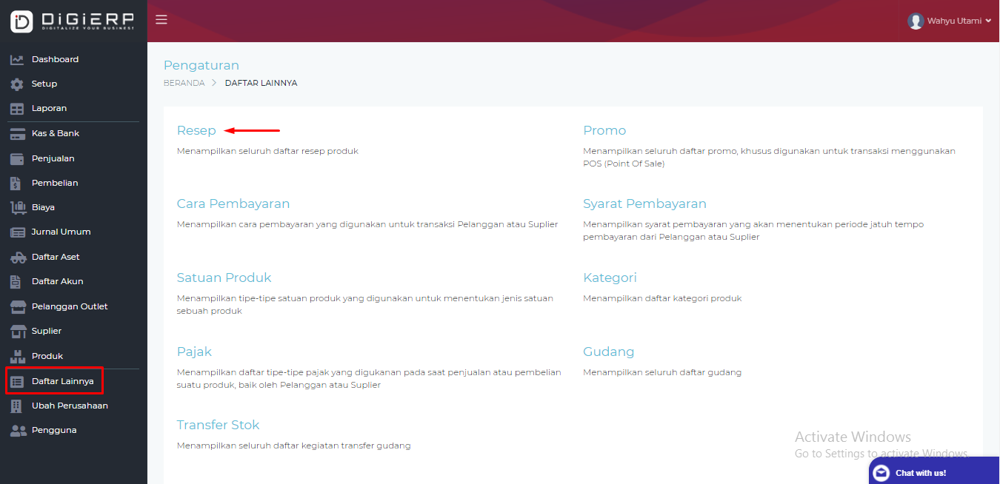

Welcome to
Resep Praktis Garlic Bread yang Cuma Butuh 4 Bahan - Lifestyle Liputan6.com
2021.03.31 16:59Sukses
liputan6
Home News Bisnis Saham ShowBiz Bola Foto Tekno Cek Fakta Video Hot Regional Otomotif Disabilitas Global On Off Surabaya Lifestyle Health Citizen6 Pilkada Ramadan Belanja Lifestyle Culinary Travel Home & Decor Pesona Indonesia Home Lifestyle CulinaryResep Praktis Garlic Bread yang Cuma Butuh 4 Bahan
Putu Elmira10 Mar 2021, 06:30 WIB Diperbarui 10 Mar 2021, 06:30 WIB
19 Perbesar Ilustrasi garlic bread. (dok. Pixabay.com/distelAPPArath)Liputan6.com, Jakarta - Garlic bread jadi sajian pelengkap untuk pizza juga pasta. Namun selain itu, garlic bread juga dapat masuk dalam daftar camilan Anda, jika bosan dengan kudapan yang itu-itu saja.
Proses pembuatan garlic bread sangat mudah dan hanya membutuhkan empat bahan saja. Resep praktis ini bisa Anda buat sendiri di rumah dan sebagai alternatif, dapat disajikan dengan saus keju.
Lalu, apa saja bahan-bahan dan langkah untuk membuat garlic bread ? Yuk, simak rangkuman selengkapnya seperti dilansir dari laman Times of India , Selasa, 9 Maret 2021, berikut ini.
Baca Juga
Usai Korean Garlic Bread, Giliran Resep Roti Ubi ala Korea yang Viral 6 Cara Sederhana Beralih ke Gaya Hidup Minim Sampah Hari Perempuan Internasional, Semangat Dukung Perempuan Wirausaha Lawan Pandemi
Bahan-bahan Garlic Bread :
2 buah baguette
10 siung bawang putih cincang
250 gram mentega
1 genggam daun mint cincang halus
**Ibadah Ramadan makin khusyuk dengan ayat-ayat ini .
2 dari 4 halamanLangkah-Langkah Pembuatan:
Perbesar Ilustrasi baguette. (dok. Pixabay.com/Intuitivmedia)1. Ambil mangkuk kaca dan tambahkan daun mint cincang (sisihkan sebagian untuk hiasan), mentega, dan bawang putih cincang dalam mangkuk. Campur semua bahan.
2. Ambil kedua baguette dan potong menjadi 15 hingga 20 irisan. Pastikan Anda tidak memotong seluruhnya dan alasnya masih utuh.
3. Dengan bantuan sendok atau pisau, oleskan campuran mentega yang sudah disiapkan pada setiap irisan. Setelah terlapisi dengan benar, ambil foil dan bungkus baguette di dalamnya.
4. Simpan irisan itu di atas loyang dan letakkan di dalam oven yang sudah dipanaskan sebelumnya pada suhu 200 derajat Celcius.
5. Periksa setelah 5--6 menit dan lepaskan foil . Lalu, masukkan kembali garlic bread ke dalam oven dan panggang hingga garing. Proses ini akan memakan waktu sekitar 5-6 menit lagi.
6. Setelah selesai, keluarkan garlic bread dari oven dan potong menjadi irisan tersendiri. Hiasi roti dengan daun mint dan sajikan roti nikmat ini dengan saus pilihan sesuai selera. Selamat mencoba.
3 dari 4 halamanCara Aman Pesan Makanan via Online dari Covid-19
Perbesar Infografis Cara Aman Pesan Makanan via Online dari Covid-19. (Liputan6.com/Abdillah) 4 dari 4 halamanSaksikan Video Pilihan di Bawah Ini:
Mengukus bawal ditambah bumbu-bumbu yang lezat tidak mengurangi gizi hidangan tersebut. Di Kota Bandung sebuah restoran mengjhususkan dengan sajian bawal Kukus yang inspirasi resepnya dari Nelayan di Pangandaran
resep praktis Agenda Resep Praktis Lihat Selengkapnya resep praktis resep Garlic Bread Kuliner Camilan0% suka 0% lucu 0% kaget 0% sedih 0% marah
Kredit
Putu Elmira Author Dinny Mutiah EditorBagikan
19Rekomendasi
Bos Mie Setan Dio Satya Biguna Sukses Berbisnis di Usia Muda
Lakukan Hal Positif Ini Jika Jadi Korban Ghosting
6 Kebiasaan Olahraga yang Harus Dihindari Saat Turunkan Berat Badan
6 Cara Mudah Memelihara Sugar Glider, Kenali Karakter dan Kesehatannya
Mendukung Medical Tourism Lewat Celltech Stem Cell Centre
Klarifikasi Burger King Inggris Soal Unggahan Kontroversial di Hari Perempuan Internasional
Jangan Lagi Diam, Lawan Pelecehan Seksual di Ruang Publik dengan Metode 5D
Bedah Gaya Rambut Wooden Contour, dari Teknik Pewarnaan sampai Styling
Donasi untuk Korban Bencana Alam di Kalimantan dan Sulawesi
TOPIK POPULER
# Fashion Beauty # Zodiak # Relationship # Pariwisata Jakarta # MakeupPopuler
Lihat Semua 1 LifestyleTop 3 Berita Hari Ini: Ketahui Syarat-Syarat Penerbangan Domestik Mulai 1 April 2021
2 TravelRangkuman Persiapan Indonesia Terima Kunjungan Wisatawan Mancanegara
3 Travel4 Bandara yang Layani Tes GeNose C19 Mulai 1 April 2021, Simak Cara Pesannya
4 Lifestyle5 Cara Terbaik Membedong Bayi dan Kapan Harus Berhenti Memakaikannya
5 TravelSejarah Taman Wisata Alam Danau Dendam Tak Sudah yang Namanya Mirip Judul Sinetron
6 LifestyleGereja Setan Suarakan Dukungan untuk Lil Nas X dan Sepatu Setan
7 TravelDaftar 44 Stasiun yang Melayani Pemeriksaan GeNose C19
8 LifestyleRose Blackpink Tampil di Sampul Vogue Australia, Bicara Masa Lalunya Sebelum Jadi Idol
9 Home & Decor6 Cara Mudah Bersihkan Jendela dengan Benar
10 LifestyleSerba-serbi Rumput Fatimah yang Diduga Sebabkan Keguguran pada Ibu Hamil
Berita Terkini
Lihat SemuaPolisi Telusuri Jaringan Teroris Pelaku Teror di Mabes Polri
Perempuan Penyerangan Mabes Poliri Sempat Tanya Kantor Pos Sebelum Tembak Polisi
Telah dibaca 0 kaliKronologi Teror Mabes Polri, Pelaku Masuk dari Pintu Belakang hingga Tembak Polisi 6 Kali
Telah dibaca 0 kaliSurat dalam Map Kuning Teroris Mabes Polri: Maafin Zakiah
Telah dibaca 0 kaliGenjot Pembangunan Rumah untuk Masyarakat, Anggaran FLPP Meningkat
Telah dibaca 0 kaliLive Streaming SCTV Sinetron Samudra Cinta Dibintangi Rangga Azof Episode Ke-613, Rabu 31 Maret 2021
Telah dibaca 0 kaliKapolri Listyo Sigit: Teroris di Mabes Polri Lonewolf Berideologi ISIS
Telah dibaca 0 kaliLaba Gudang Garam Turun 29,71 Persen pada 2020
Telah dibaca 0 kaliSteven Gerrard : Cristiano Ronaldo Sedikit Egois, Saya Pilih Lionel Messi
Telah dibaca 0 kaliDari Pusat Komando Ini, Pertamina Pantau Kondisi Pasokan dan Distribusi BBM
Telah dibaca 0 kaliKapolri: Penyerang Mabes Polri Eks Mahasiswi, Drop Out Semester 5
Telah dibaca 0 kaliIni Dia Cara Ampuh Ajak Anak Gemar Berolahraga dan Aktivitas Fisik
Telah dibaca 0 kaliSolidaritas untuk Nurhadi, Aliansi Wartawan Bojonegoro Ajukan 11 Tuntutan
Telah dibaca 0 kaliTMMD ke-110 di Palembang, Membangun Desa Menyejahterakan Rakyat
Telah dibaca 0 kaliSinopsis Sinetron SCTV Samudra Cinta: Sam Panik tapi Cinta Tegar, Tayang Rabu 31 Maret 2021 Malam
Telah dibaca 0 kali